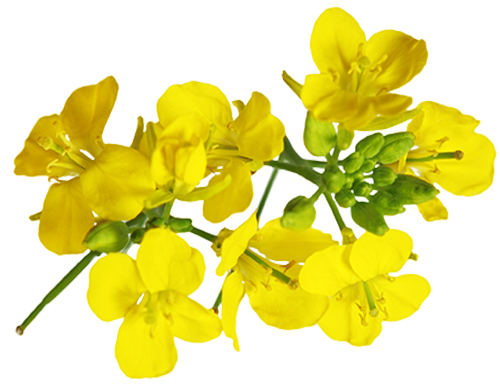
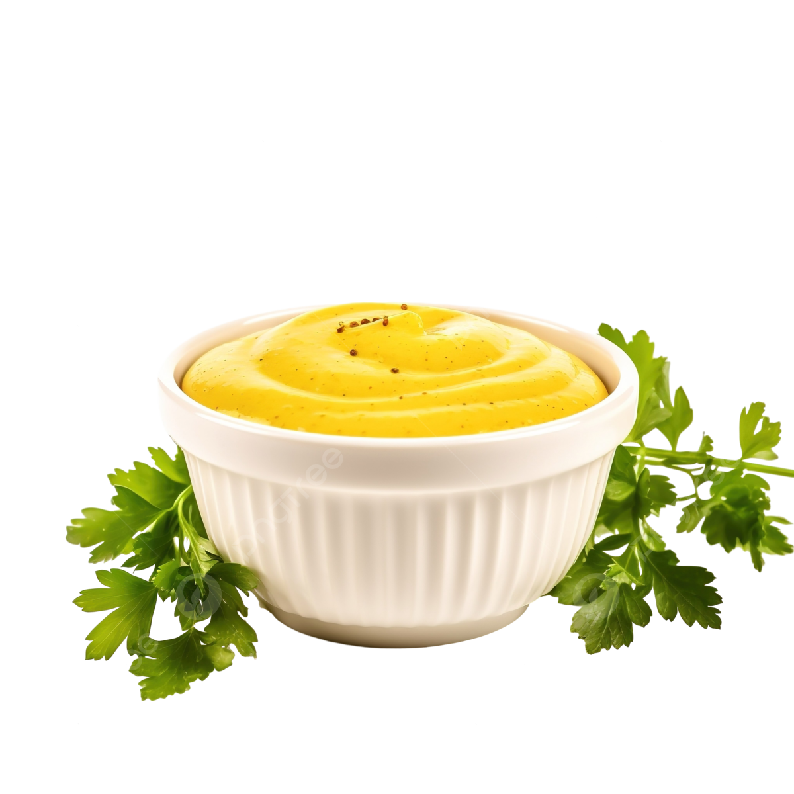
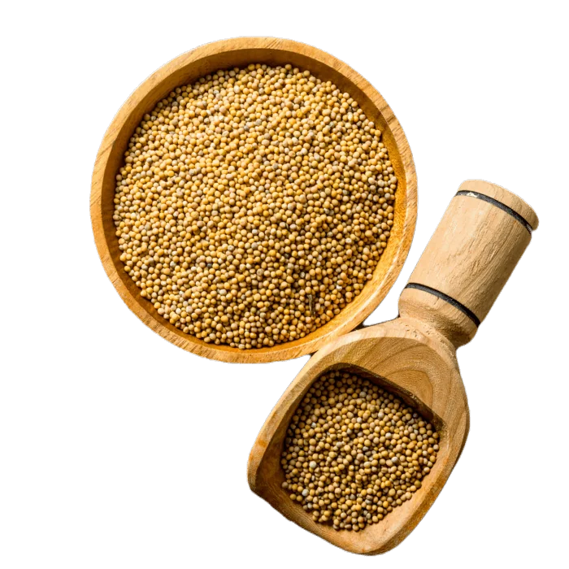

Origem da mostarda:
A mostarda tem origem em plantas do gênero Brassica, que incluem
espécies como Brassica juncea, Brassica nigra e Brassica alba. Essas
plantas são cultivadas há milhares de anos e têm origem principalmente
na Europa, Ásia e na região do Mediterrâneo. Desde a antiguidade, as
sementes de mostarda já eram valorizadas por seu sabor marcante e por
suas propriedades medicinais. Com o passar do tempo, seu uso se
espalhou pelo mundo, tornando-se um dos temperos mais populares.

Plantio da mostarda:
Como a mostarda vira tempero:
O tempero mostarda é produzido a partir das sementes colhidas da planta.
Primeiro, as sementes passampor um processo de secagem e limpeza.
Depois, elas são moídas, formando um pó ou uma pasta.
Para transformar esse pó no molho de mostarda que conhecemos, são
adicionados líquidos como água, vinagre ou vinho. Também podem ser
incluídos outros ingredientes, como sal, açúcar e especiarias, que
influenciam diretamente no sabor final. Dependendo do tipo de semente
e da receita utilizada, a mostarda pode variar de suave a extremamente
picante.

Filé Mignon ao Molho Dijon Clássico
Sobrecoxas de Frango com Crosta de Mostarda e Mel
>Ingredientes:
Modo de preparo:

Salada de Batatas Alemã (Kartoffelsalat)
Espécies de Mostarda:
Nome:
Características Principais:
Usos Comuns:
Mostarda Branca (ou Amarela)
Sementes grandes e claras.
Sabor suave e menos picante.Base para a mostarda americana
clássica e conserva de picles.
Mostarda Castanha (ou Indiana)
Sementes de cor marrom. Sabor picante e
pungente. Folhas largas e comestíveis.Fabricação da mostarda de Dijon e
culinária asiática (refogados).
Mostarda Preta
Sementes pequenas e escuras. É a variedade
mais picante e intensa de todas.Muito usada na culinária indiana
(frequentemente frita em óleo).
Mostarda Silvestre
Considerada muitas vezes uma erva daninha,
tem flores amarelas vibrantes.Melífera (atrai abelhas) e consumo
ocasional de folhas jovens.
Mostarda-de-Folha
Variedade focada na produção de folhagem
verde, muitas vezes crespa.Saladas, refogados e pratos típicos do sul
dos EUA e Brasil.
Vídeo de receita de
Filé Mignon ao Molho de Mostarda
Bibliografia: